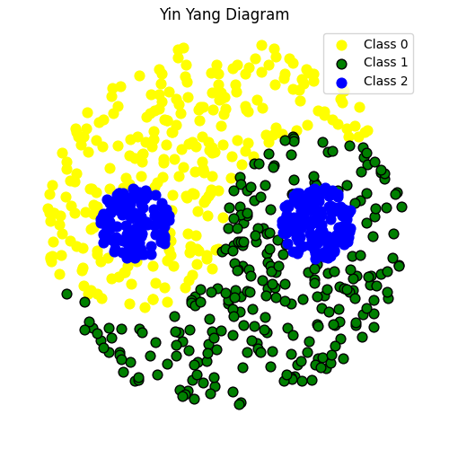
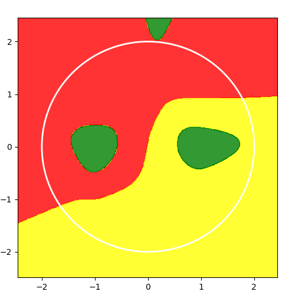

1.5 micrograd
一个微型的对标量值进行自动求导的引擎！
创建日期: 2025-04-03
在本教程中将构建一个微型“autograd”引擎（Automatic Gradient 的缩写），它实现反向传播算法。该算法在 1986 年 Rumelhart 等人的论文 Learning Internal Representations by Error Propagation 中被广泛用于训练神经网络。
文件 micrograd.py 中的代码是神经网络训练的核心，它使我们能够更新神经网络的参数，以使其在某些任务上表现得更好，例如自回归语言模型中的下一个单词预测。所有现代深度学习库（例如 PyTorch, Tensorflow, JAX 等）都使用完全相同的算法，只是这些库的优化程度更高，功能也更丰富。
1.5.1 太极数据集
如下图所示，每个数据样本被归类为三种颜色类别之一，所有类别的样本数量大致相同：

1.5.2 Value 类型
Value 类用于表示标量值及其梯度，支持自动求导。它包含以下主要组件：
数据存储：
data用于存储标量值，grad 存储对应的梯度，初始为 0。反向传播：
_backward是一个方法，用于实现链式法则，在反向传播过程中更新梯度。操作记录：
_prev用于记录该值的前驱节点（即参与运算的操作数），_op存储产生该节点的操作名称（如加法、乘法等）。
class Value:
""" stores a single scalar value and its gradient """
def __init__(self, data, _prev=(), _op=''):
self.data = data
self.grad = 0
# internal variables used for autograd graph construction
self._backward = lambda: None
self._prev = _prev
self._op = _op # the op that produced this node, for graphviz / debugging / etc
def __add__(self, other):
other = other if isinstance(other, Value) else Value(other)
out = Value(self.data + other.data, (self, other), '+')
def _backward():
self.grad += out.grad
other.grad += out.grad
out._backward = _backward
return out
def backward(self):
# topological order all of the children in the graph
topo = []
visited = set()
def build_topo(v):
if v not in visited:
visited.add(v)
for child in v._prev:
build_topo(child)
topo.append(v)
build_topo(self)
# go one variable at a time and apply the chain rule to get its gradient
self.grad = 1
for v in reversed(topo):
v._backward()
def __neg__(self): # -self
return self * -1.0
def __repr__(self):
return f"Value(data={self.data}, grad={self.grad})"支持的运算有加法、乘法、幂运算、ReLU、tanh、exp 和对数，每个操作会返回一个新的 Value 对象，并定义一个 _backward 方法来计算该操作的梯度。比如加法操作会将梯度累加到参与运算的两个 Value 对象上，乘法操作会按乘法法则更新梯度。
backward() 方法通过拓扑排序（按操作顺序）计算梯度，从输出节点开始，逐层向输入节点传播梯度，最终计算出每个变量的梯度。
这类实现了基本的自动微分功能，能帮助我们进行深度学习中常见的梯度计算。
1.5.3 构建神经网络
1.5.3.1 Module 基类
1.5.3.2 Neuron 类
1.5.3.3 Layer 类
1.5.3.4 MLP 多层感知机
将上面的结构体组合构建模型：
# init the model: 2D inputs, 8 neurons, 3 outputs (logits)
model = MLP(2, [8, 3])1.5.4 训练
1.5.4.1 cross_entropy 损失
1.5.4.2 AdamW 优化器
1.5.4.3 训练过程
1.5.5 结果预测
def predict(model, x):
x = (Value(x[0]), Value(x[1]))
logits = model(x)
label = numpy.argmax(numpy.array([v.data for v in logits]))
return label绘制边界函数：
def plot_decision_boundary(x, pred_func):
# Set min and max values and give it some padding
x_min, x_max = x[:, 0].min() - .5, x[:, 0].max() + .5
y_min, y_max = x[:, 1].min() - .5, x[:, 1].max() + .5
h = 0.01
# Generate a grid of points with distance h between them
xx, yy = numpy.meshgrid(numpy.arange(x_min, x_max, h),
numpy.arange(y_min, y_max, h))
xx_ravel = xx.ravel()
yy_ravel = yy.ravel()
Z = []
for x_coord, y_coord in zip(xx_ravel, yy_ravel):
Z.append(pred_func(numpy.array([x_coord, y_coord])))
Z = numpy.array(Z)
Z = Z.reshape(xx.shape)
pyplot.figure(figsize=(5, 5))
pyplot.subplots_adjust(left=0.06, right=0.94, top=0.94, bottom=0.06)
custom_cmap = ListedColormap(['red', 'yellow', 'green'])
# Plot the contour and training examples
pyplot.contourf(xx, yy, Z, cmap=custom_cmap, alpha=0.8)
radius = 2.0 # Define the radius of the circle for decision boundary
circle = pyplot.Circle((0, 0), radius, color='white',
fill=False, linewidth=2)
pyplot.gca().add_artist(circle)
pyplot.show()预测结果：
